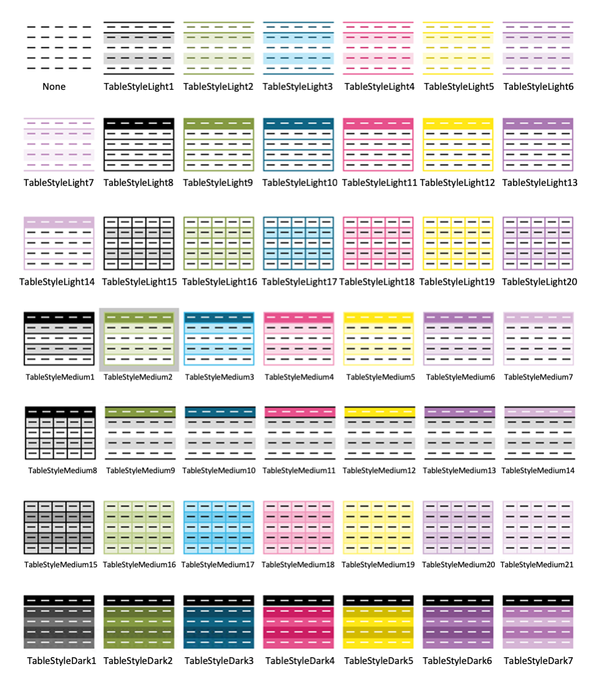

The as_excel() function relies on the openxlsx2 package for creating an Excel Workbook object in R. These objects can be saved using save_excel() or export_xlsx().
as_excel(
...,
sheet_names = NULL,
autofilter = TRUE,
autowidth = TRUE,
widths = NULL,
rows_zebra = TRUE,
cols_zebra = FALSE,
freeze_top_row = TRUE,
digits = 2,
align = "center",
table_style = "TableStyleMedium2",
creator = Sys.info()["user"],
department = read_secret("department.name"),
project_number = project_get_current_id(ask = FALSE)
)
save_excel(xl, filename = NULL, overwrite = FALSE)data sets, use named items for multiple tabs (see Examples)
sheet names
create autofilter on columns in first row. This can also be a vector with the same length as ....
automatically adjust columns widths. This can also be a vector with the same length as ....
width of columns, must be length 1 or ncol() of the data set. If set, overrides autowidth.
create banded rows. This can also be a vector with the same length as ....
create banded columns. This can also be a vector with the same length as ....
freeze the first row of the sheet. This can also be a vector with the same length as ....
number of digits for numeric values (integer values will always be rounded to whole numbers), defaults to 2
horizontal alignment of text
style(s) for each table, see below. This can also be a vector with the same length as ....
name of the creator of the workbook
name of the department of the workbook
project number, to add project ID as the subject of the workbook
Excel object, as created with as_excel() (or manually with the openxlsx2 package)
file location to save Excel document to, defaults to a random filename in the current folder
overwrite existing file
For the argument table_style, use one or more of these table styles as character input. The default is TableStyleMedium2.

# creates a Workbook object
xl <- as_excel("this is a sheet" = mtcars,
"another sheet" = anscombe)
#> Warning: In read_secret(): environmental variable 'secrets_file' not set
#> Warning: Row names for object 1 (32 × 11, sheet 'this is a sheet') added as first column 'rownames'
xl
#> A Workbook object.
#>
#> Worksheets:
#> Sheets: this is a sheet, another sheet
#> Write order: 1, 2
# then save it with save_excel() or export_xlsx()